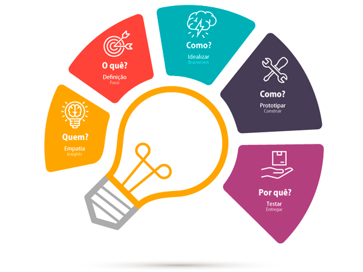
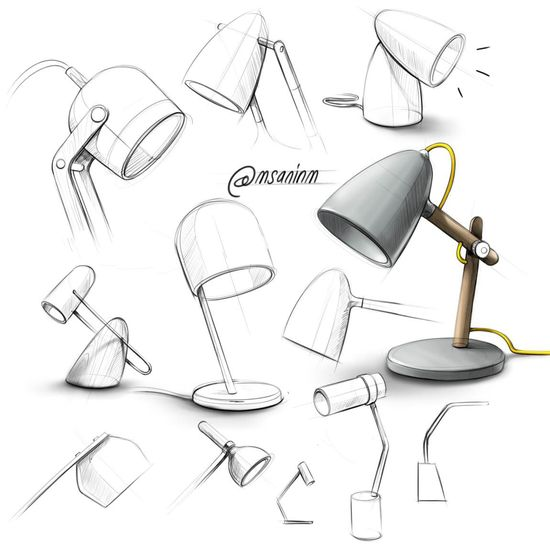
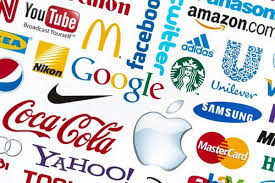
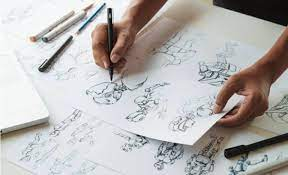

Design Thinking:
Design Thinking é um método para estimular ideação e perspicácia ao abordar problemas,
relacionados a futuras aquisições de informações,
análise de conhecimento e propostas de soluções.

Design Gráfico:
Design Gráfico é a área de conhecimento e a prática profissional específicas relativas ao
ordenamento estético-formal de elementos textuais e não-textuais que compõem peças gráficas
destinadas à reprodução com objetivo expressamente comunicacional.

Design de Interface:
Design de interface de utilizador é o desenvolvimento de computadores, aplicações, máquinas,
dispositivos de comunicação móveis e web com o foco na experiência do utilizadores e interação.
Design de industrial:
O design industrial, trabalha com a criação e produção de objetos e produtos tridimensionais
com foco para usufruto humano, mas também pode ser para uso animal.

Web Design:
O web design é uma extensão da prática do design gráfico, onde o foco do projeto é a criação
de web sites e documentos disponíveis no ambiente da World Wide Web (www).
Brand Design:
O termo Brand Design, bem ao pé da letra mesmo, vem da ideia de construir o design, a
“cara” de uma marca, a representação simbólica daquilo que está sendo construído.

Design de Animação:
O design de animação é a área responsável pelos efeitos visuais e animações feitos
para cinema, games, sites, aplicativos, campanhas publicitárias, entre outras. Esses efeitos visuais
e animações podem ser em 2D e em 3D.

Inicio
Voltar